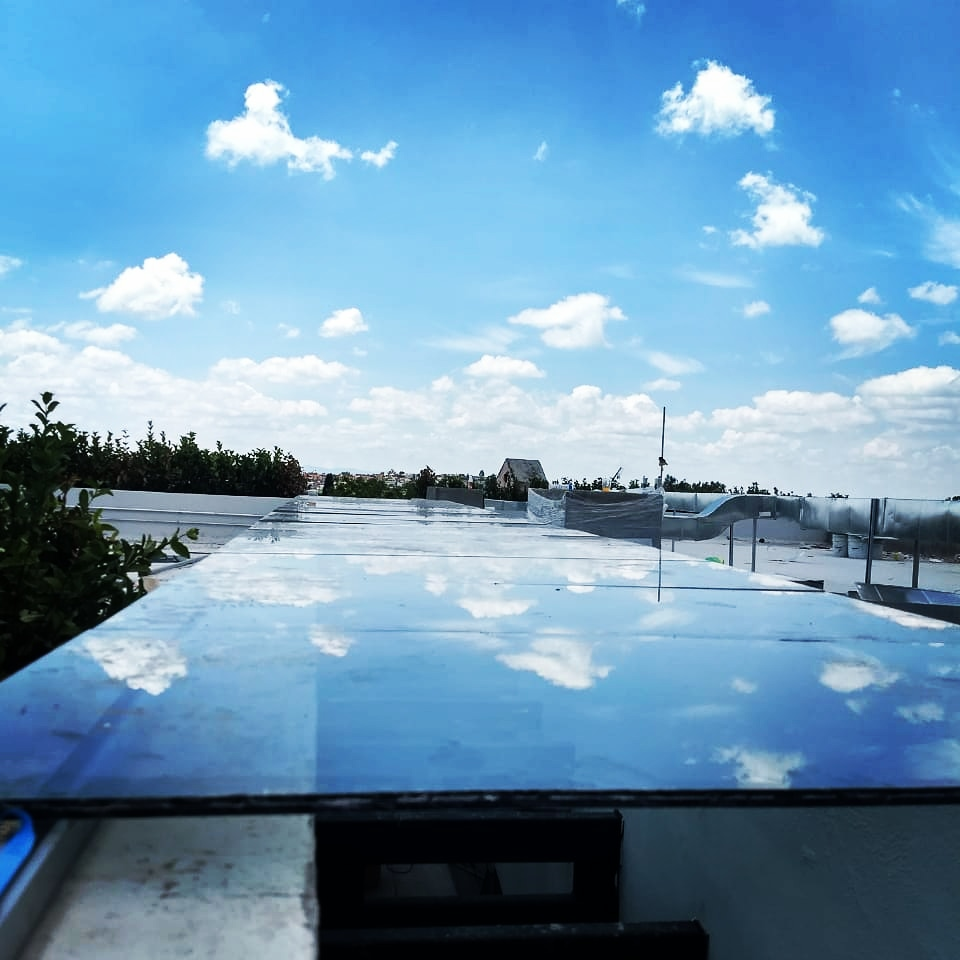
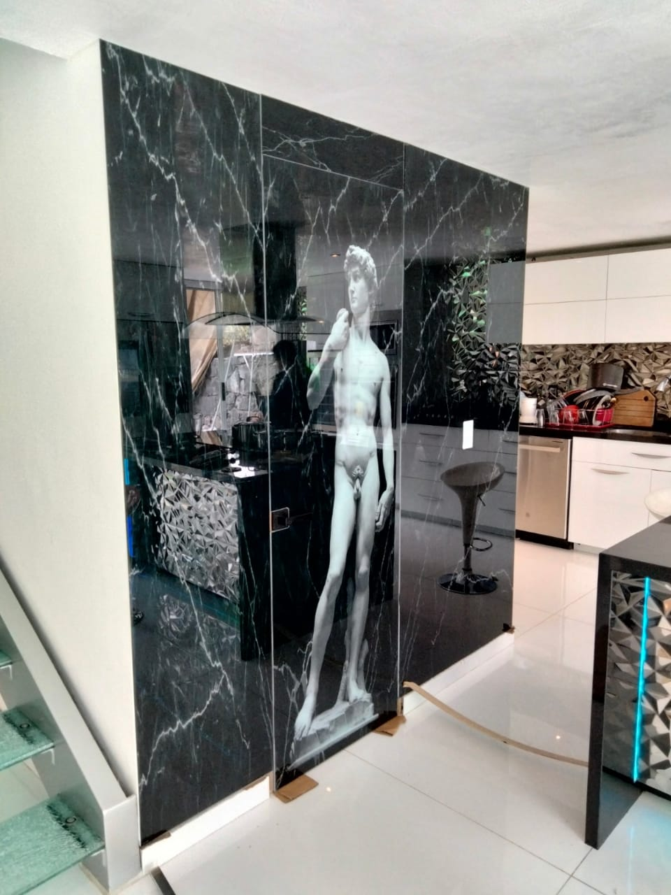
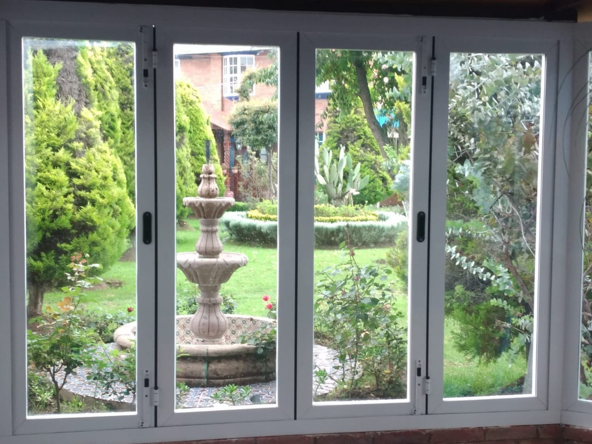

En DesinGlass Cancelería hemos realizado numerosos proyectos en los cuales nuestros clientes han quedado satisfechos
no solo en lo estético si no también en lo funciona.
Somos los especialistas en soluciones inteligentes, hacemos que tu
proyecto sea como siempre lo habías imaginado. Te ayudamos a desarrollar tu proyecto con nuestro equipo de trabajo
especializados en la fabricación de cancelería de aluminio y cristal templado para uso residencial, comercial y arquitectónico.
DesinGlass Cancelería
¡Comprometidos con tus proyectos!

Ya sea con cristal o con aluminio haremos que tu proyecto sea como siempre lo habías imaginado. Los cristales con estampados
personalizados harán que tu proyecto luzca y cumpla tanto en lo estético como en lo funcional. Contamos con la experiencia necesaria
para realizar tu proyecto en tiempo óptimo en cualquier estado de la república. Con DesinGlass Cancelería no tendás que preocuparte
ya que tus proyectos serán entregados en el menor tiempo posible y con la calidad que nos caracteriza poniéndonos en tu preferencia.

Calidad
DesinGlass fabrica bajo los estandares de calidad mas estrictos que nos distingue
y nos pone en tu preferencia.
Canceleria especializada
cristaleria
En DesinGlass contamos concristales con estampados personalizados
para tu proyecto.
Comprometidos contigo
satisfacción
En DesinGlass trabajamos a medida para no solo cumplan con lo
estético si no también con lo funcional.
Soluciones Confiables

¡25 años nos respaldan!
La calidad y experiencia son la clave en nuestros proyectos, ya sea en ventanas y puertas, de aluminio o de
cristal templado. Cumplimos con todos los requerimientos para cumplir con tus expectativas
mas altas ya que contamos con 25 años de experiencia y un equipo de especialistas y personal calificado para realizár tu proyecto.
Somos los especialistas en soluciones, no importa el tamaño de tu proyecto
ofrecemos la satisfacción en tus proyectos,contáctate con nosotros y has de tu proyecto lo que siempre habías imaginado.
Ante la necesidad de encontrar espacios en el hogar que además
de confort brinden amplitud y funcionalidad contamos con expertos para desarrollar ventanas, puertas, cubiertas, canceles,
barandales, entre otros. Teniendo en cuenta tus necesidades y fabricándolas echas a medida para no solo cumplan con lo estético
si no también con lo funcional.
¡Cristalería especializada!
En DesinGlass Cancelería contamos con una variedad de vidrios los cuales
se fabrican dependiendo de tus necesidades, como lo son los vidrios acústicos
que se fabrican especialmente para repeler las ondas sonoras gracias al espesor
que este posee. O nuestros vidrios con extra resistencia y durabilidad, los cuales
están fabricados con un refuerzo especial el cual asegura la resistencia y la durabilidad
además de realizar un aislamiento ante el ruido exterior.